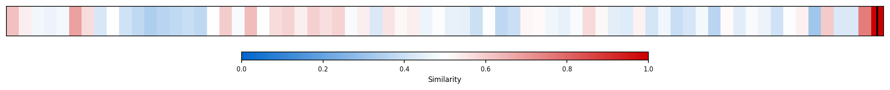

Description
This subcluster examines China's internal political dynamics, military affairs, and social challenges rather than external trade relationships. Articles focus on CCP leadership changes, military promotions and purges, youth unemployment crises, content censorship policies, and anti-corruption campaigns involving detention of officials. Coverage includes government statistics on unemployment, reports on Party plenum attendance, and analysis of domestic policy responses to social issues. Unlike the trade-focused sibling subcluster analyzing export data and surplus figures, this collection emphasizes China's internal governance struggles, demographic challenges, and political control mechanisms that indirectly impact economic performance.
Similarity to All 70 Subclusters
Each cell represents a subcluster. Color intensity shows similarity (blue=low, red=high). Black line marks current subcluster position.
Relationship to Primary Clusters
Average similarity to each of the 15 primary clusters. Larger area = stronger relationship to that cluster.

Taxonomy Landscape
All 70 subclusters positioned by similarity (t-SNE). Current subcluster highlighted with label. Click to enlarge.

Network Connections
Current subcluster at center, connected to related subclusters. Line thickness = similarity strength.

Most Representative Articles
-
1. About 12mm graduates are set to enter China's workforce this year. A revamped youth unemployment lev
-
2. China’s youth unemployment (16–24) rose to 18.9% in August, its highest level since the measure was
-
3. China's urban jobless rate was 5% in May. Among 16 to 24–year olds, excluding students, it was 14.9%
-
4. Youth unemployment (16-24) in China hit 17.2% in July, a record high under the new data methodology
-
5. 11.6M new Chinese graduates are entering the labor market in June. Currently 20% of Chinese between
Edge Cases (Boundary Articles)
-
1. Legislation that would ban Tiktok in the U.S. unless its Chinese parent divests ownership is headingThis article is borderline because while it involves a Chinese company (TikTok), it primarily focuses on U.S. legislative processes and domestic policy decisions rather than China's internal political dynamics, military affairs, or social challenges. The content is more about American congressional action and presidential decision-making than about Chinese domestic politics, making it a better fit for a legislative analysis cluster.
-
2. Microsoft uncovered a Chinese attack on American infrastructure that would enable the Chinese governThis article is borderline because while it involves Chinese government actions, it focuses on external cyberattacks against U.S. infrastructure rather than China's internal political dynamics, military affairs, or domestic social challenges that define the cluster. The content is more aligned with international security threats and military strategy rather than China's domestic governance and internal issues.
-
3. President Trump signed an executive order declaring the spinoff of TikTok's US operations to AmericaThis article is borderline because while TikTok is a Chinese-owned company, the content focuses entirely on U.S. domestic policy actions (Trump's executive order) and Congressional oversight of American regulatory compliance, rather than examining China's internal political dynamics, CCP leadership, or social issues within China. The article treats TikTok primarily as a subject of U.S. policy-making rather than analyzing Chinese domestic politics or governance.
Original Dendrogram